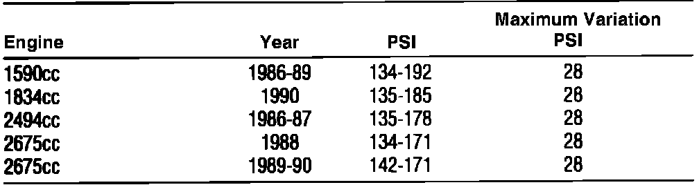

Compression Check

Compression pressure should be checked with engine at normal operating temperature, spark plugs removed, and throttle wide open. When checking compression, lowest cylinder should be within 80 percent of highest.
